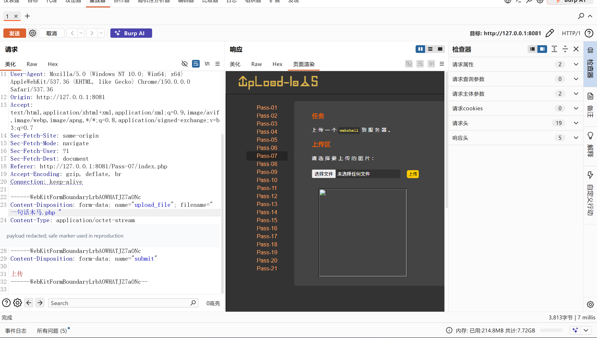

Upload-Labs Pass-07：扩展名尾随空格绕过
本文记录本机授权靶场 http://127.0.0.1:8081/Pass-07/index.php 的实验过程。Pass-07 对扩展名执行小写化并查询黑名单，但没有清理扩展名末尾的空格；在 .php 后追加一个 ASCII 空格后，校验得到的值是 .php ，因此不会命中黑名单里的 .php。
一、实验信息
| 项目 | 内容 |
|---|---|
| 靶场 | Upload-Labs |
| 关卡 | Pass-07 |
| 漏洞类型 | 扩展名过滤未规范化，利用尾随空格绕过 |
| 工具 | 浏览器、Burp Suite、WSL、curl |
| 运行环境 | Linux / WSL 中的 PHP 8.4 内置服务器 |
| 验证结果 | 上传校验绕过并成功落盘；本机未确认 PHP 代码执行 |
二、功能观察
页面目标是把一个 webshell 上传到服务器，表单中的文件字段名为 upload_file。使用普通文件名 一句话木马.php 时，服务端返回“此文件不允许上传”，说明黑名单可以直接识别常规 PHP 扩展名。
开启 Burp 拦截后重新提交，在 multipart 请求的 Content-Disposition 中可以看到客户端可控的文件名。下图保留了关键请求区域与响应区域：请求文件名在 .php 后追加了一个空格，响应页随后生成了指向新文件的图片框。

一句话木马.php ，其中 .php 后保留了一个 ASCII 尾随空格。三、请求构造
复现时可使用一个只输出固定标记的无副作用 PHP 文件，避免在发布材料中保存可复用木马。请求中的文件名是第一个关键点：
POST /Pass-07/index.php HTTP/1.1
Host: 127.0.0.1:8081
Content-Type: multipart/form-data; boundary=----WebKitFormBoundaryEXAMPLE
------WebKitFormBoundaryEXAMPLE
Content-Disposition: form-data; name="upload_file"; filename="pass07_probe.php "
Content-Type: application/octet-stream
<?php echo "PASS07_UPLOAD_OK"; ?>
------WebKitFormBoundaryEXAMPLE
Content-Disposition: form-data; name="submit"
上传
------WebKitFormBoundaryEXAMPLE--filename="pass07_probe.php " 的双引号内确有一个 ASCII 空格。编辑器保存后可能不容易直接看见，复现时建议用十六进制视图检查 2e 70 68 70 20 是否对应 .php 。四、漏洞定位
点击“显示源码”可以看到本关核心逻辑：
$deny_ext = array(".php", ".php5", ".php4", ..., ".ini");
$file_name = $_FILES['upload_file']['name'];
$file_name = deldot($file_name); // 删除文件名末尾的点
$file_ext = strrchr($file_name, '.');
$file_ext = strtolower($file_ext);
$file_ext = str_ireplace('::$DATA', '', $file_ext);
if (!in_array($file_ext, $deny_ext)) {
$img_path = UPLOAD_PATH.'/'.date("YmdHis").rand(1000,9999).$file_ext;
move_uploaded_file($_FILES['upload_file']['tmp_name'], $img_path);
}对文件名 一句话木马.php ，处理链如下：
| 阶段 | 结果 |
|---|---|
deldot() | 只处理末尾的点，不清理末尾空格 |
strrchr() | 提取出 .php ，空格仍是扩展名的一部分 |
strtolower() | 结果仍是 .php |
in_array() | .php 与 .php 不相等，检查放行 |
| 落盘路径 | 随机文件名后拼接 .php ，尾随空格被保留 |
问题的本质是“用于判断的字符串”和“最终落盘的字符串”没有统一规范化。小写转换只处理了大小写，没有执行 trim()，也没有从服务端白名单重新生成安全扩展名。
五、验证结果与环境差异
本次请求成功绕过了上传校验。WSL 文件系统中实际生成的文件为：
/home/ctf/labs/upload-labs/upload/202610290153475586.php 使用 stat 可以看到文件大小为 32 字节，文件名的结尾空格也确实存在。通过 URL 编码访问该路径：
curl.exe -sS -i "http://127.0.0.1:8081/upload/202610290153475586.php%20"响应状态为 200 OK，但返回内容是 PHP 源码，而不是脚本执行结果。进一步检查也没有得到固定的执行标记。因此本机可以确认：
- 黑名单校验已被尾随空格绕过。
- 文件已成功写入 Web 可访问的
upload/目录。 - Linux 下的 PHP 内置服务器没有把
.php识别为 PHP 处理器扩展名。
.php 可能实际落盘为 .php，随后被 PHP 执行。当前实验使用 Linux/WSL，文件名中的空格被保留，所以不能把“经典环境中的预期效果”写成“本机已经验证 RCE”。| 环境 | 落盘文件名 | 观察结果 |
|---|---|---|
| Windows 经典靶场 | 尾随空格通常被文件系统规范化 | 校验绕过后可能由 .php 处理器执行，本例未在当前机器验证 |
| 本次 Linux / WSL | ...php ，空格保留 | 文件可访问，但返回源码，未确认代码执行 |
六、实验文件清理
验证结束后，只删除本次上传且带有尾随空格的文件：
rm -- '/home/ctf/labs/upload-labs/upload/202610290153475586.php '删除后再次请求同一路径返回 404 Not Found，upload/ 目录中只保留项目自带的 readme.php。这说明清理操作命中了本次测试文件，没有使用会删除全部上传内容的批量按钮。
七、影响与修复
尾随空格绕过使应用的黑名单判断与文件系统实际写入产生差异。若部署在会规范化尾随空格的平台，脚本就可能以可执行扩展名落盘，形成服务器端代码执行风险。
- 不要依赖扩展名黑名单，改用固定的服务端白名单。
- 在比较前同时执行
trim()、路径分隔符清理和大小写统一，且对原始值与规范化值的差异直接拒绝。 - 忽略客户端文件名，由服务端生成随机文件名和固定安全扩展名。
- 检查 MIME、文件头与实际内容；图片应重新解码并编码。
- 将上传目录移出 Web 根目录，或在 Web 服务器层禁止该目录执行脚本。
八、复盘
Pass-07 的绕过点不是空格本身，而是“过滤函数看到的扩展名”与“文件系统最终保存的扩展名”不一致。写报告时应把上传校验绕过、文件落盘、HTTP 可访问和代码执行分别记录；本次在本机只验证了前三项中的前两项，并为第三项明确标记了环境限制。